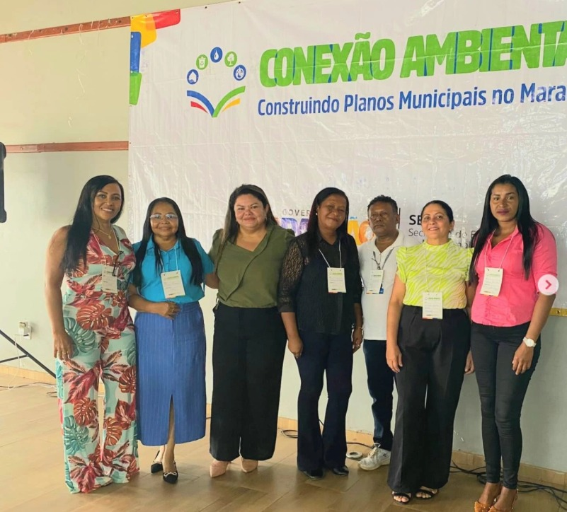

Conselho Municipal de Educação de Bacabal
Educação com Propósito, Gestão Democrática com Responsabilidade.
📍 Bacabal - Maranhão
✉️ conselhomunicipaldeeducacaobac@gmail.com
Sobre o conselho
O Conselho Municipal de Educação de Bacabal é um órgão colegiado, composto por Câmaras Técnicas e Comissões Especiais, de caráter deliberativo, normativo, consultivo e fiscalizador que atua na formulação e acompanhamento das políticas públicas educacionais do município.

Nossas atribuições
Diretrizes e Normas
Aprovar diretrizes e normas da educação municipal
Acompanhamento
Acompanhar a execução do Plano Municipal de Educação
Pareceres
Emitir pareceres sobre assuntos educacionais
Participação
Promover a participação da sociedade civil
Resoluções e Pareceres
As resoluções e pareceres são instrumentos normativos e consultivos utilizados e produzidos pelo Conselho Municipal de Educação (CME) para orientar, regular e garantir a qualidade das políticas educacionais no âmbito do município.
Resoluções são atos normativos que estabelecem regras, diretrizes e procedimentos obrigatórios para o funcionamento das instituições de ensino, a aplicação da legislação educacional local e a implementação de políticas públicas.
Pareceres são documentos opinativos e técnicos que analisam situações específicas — como a autorização de funcionamento de escolas, a criação de cursos ou a avaliação de planos educacionais — e orientam decisões da gestão pública.
🎯 Importância
- ✅ Garantem a legalidade e a qualidade da educação oferecida no município.
- 📚 Orientam escolas e gestores quanto à aplicação correta da legislação educacional.
- 🤝 Fortalecem o controle social e a participação da sociedade nas decisões educacionais.
- 🔍 Ajudam a resolver conflitos ou dúvidas sobre normas e procedimentos educacionais.
Ações desenvolvidas
👉 Ver todas as ações
Contato
Endereço
R. Osvaldo Cruz - Centro Bacabal - MA, 65.700-000
E-mail
conselhomunicipaldeeducacaobac@gmail.com
Redes Sociais
Instagram